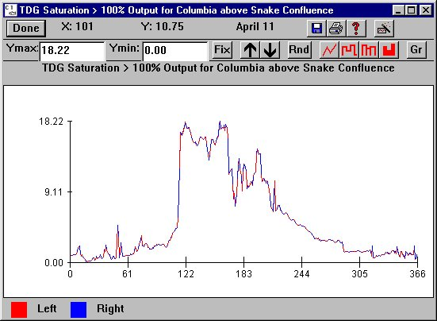

TDG Saturation > 100%: Reach
Selecting a Reach from Reservoir TDG Saturation > 100%Reach opens a histogram of the level of total dissolved gas (tdg) exiting the reach for viewing only. Tdg saturation for both the left-bank flow (red) and right-bank flow (blue) levels are marked on the same graph. These flows often have different levels of gas upon exiting a dam because of the gas production from spill. As the water flows downstream, the level of total dissolved gas decreases due to dissipation across the air-water surface. For reaches directly above a dam, this corresponds to the forebay dissolved gas level. Histograms of the daily tdg level are displayed in percent above 100, the equilibrium level. For example, if saturations vary between 100% and 110%, the Y-axis will range from 0 to 10 with the Julian date on the X-axis.
TDG Saturation > 100%Reach opens a histogram of the level of total dissolved gas (tdg) exiting the reach for viewing only. Tdg saturation for both the left-bank flow (red) and right-bank flow (blue) levels are marked on the same graph. These flows often have different levels of gas upon exiting a dam because of the gas production from spill. As the water flows downstream, the level of total dissolved gas decreases due to dissipation across the air-water surface. For reaches directly above a dam, this corresponds to the forebay dissolved gas level. Histograms of the daily tdg level are displayed in percent above 100, the equilibrium level. For example, if saturations vary between 100% and 110%, the Y-axis will range from 0 to 10 with the Julian date on the X-axis.
This is a Julian Day Output window.

TDG Saturation > 100% for Columbia above Snake Confluence